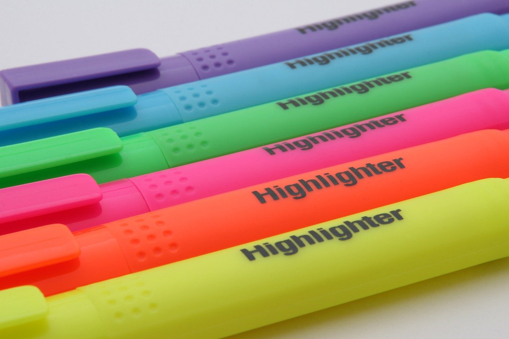

アップロード
検索結果
画像の
文字検出
アプリ

画像から探したい文字列をハイライトします。
講義の資料，会議の資料などの画像から，特定の単語をハイライトすることができます。
「あの内容どこに書いてあったっけ？」や，「この単語は大事だから目立つようにしよう」といった時に利用してください。
使い方は簡単。
画像，ハイライトしたいキーワード，保存するファイル名を入力して，「作成」ボタンを押すだけです。
アップロード